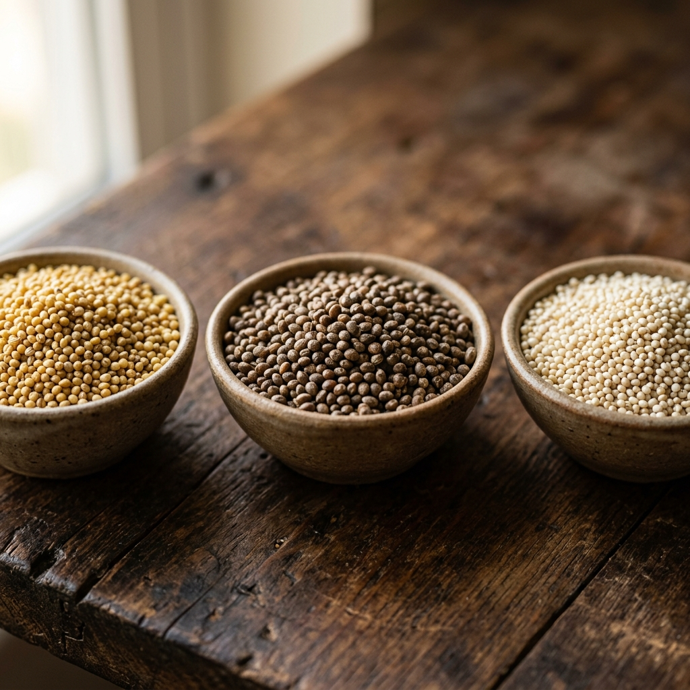

By Subashri M
Proprietor, SNS Global TradersThe Grains Nobody Talked About Are Now the Ones Everyone Wants
When people think about Indian millet exports, they almost always think about the big names first. Pearl Millet, Finger Millet, and Sorghum. These are the grains that built the export story, and they still drive a large share of the volume going out of Indian ports every year.
But something has been quietly shifting over the past year, and I have been watching it happen in real time through the inquiries we receive at SNS Global Traders.
The grains people are asking about now are Foxtail Millet, Kodo Millet, and Barnyard Millet. The ones that, until recently, were mostly consumed locally within India and rarely made it into an export conversation.
That is changing fast.
What is driving this shift
The simplest answer is that the health food market has moved on from generalist claims. A few years ago, gluten free was enough to sell a product. Today, buyers want more specificity.
They want grains with a documented low glycemic index for diabetic friendly formulations. They want ancient grains that most consumers have not heard of yet, because novelty sells in the premium health segment. They want clean, traceable sourcing from a country with established export infrastructure.
Small millets tick every single one of those boxes.

Foxtail Millet, known as Thinai in Tamil, is seeing strong demand from East Asian markets where it is used in brewing, snack production, and traditional cooking. In Western markets, Foxtail varieties are driving Ready-to-Eat snack formulations that are growing at somewhere between 18 and 22 percent annually. That is not a slow simmer. That is a category accelerating quickly.
Kodo Millet and Barnyard Millet are particularly valuable for diabetic nutrition products. They digest slowly, have a very low glycemic response, and carry a nutrient profile that food scientists working on clinical nutrition products genuinely get excited about. The challenge with these two grains is that supply is limited. Farmers harvest less per acre compared to the major millets, which means prices are higher and buyers who want consistent supply need to plan ahead and secure contracts early.
Where India stands right now
India is not just a participant in this market. It is the foundation of it.
India accounts for roughly 40 percent of the world's total millet production. For Finger Millet specifically, India supplies 95 percent of global exports. No other country comes close to that kind of dominance across so many varieties at the same time.
The government has been pushing hard on this front. The International Year of Millets in 2023 created global awareness that is still paying dividends. APEDA has been running buyer-seller meets across the UAE, Germany, Japan, the US, the UK, and South Korea to open new trade relationships.
The results are starting to show. Algeria and Germany have emerged as two of the fastest growing new markets for Indian millet exports, which tells you that European food manufacturers are seriously evaluating these grains for mainstream product lines.
The global millet market is currently valued at around USD 13.4 billion and projections take it to nearly USD 18.7 billion by 2032. That kind of trajectory does not happen without sustained, structural demand. This is not a wellness trend that will fade. It is a fundamental rethinking of which grains belong in a modern, health-forward food supply.
What this means if you are sourcing right now
June is actually a good time to be having this conversation. Post-monsoon price spikes on small millets like Kodo and Barnyard can run 20 to 25 percent above the base price, so buyers who plan their procurement ahead of that window generally get better value.
At SNS Global Traders, we export the full range: Finger Millet, Pearl Millet, Foxtail Millet, Kodo Millet, Barnyard Millet, and Browntop Millet. All machine-cleaned, sortex processed, and packed to your specification. We work with buyers who need large commercial volumes and with brands that need smaller, carefully packed retail-ready shipments.
If small millets are something you have been meaning to explore for your product line, now is a reasonable time to start that conversation.
Reach out through our contact page. We will get back to you personally.